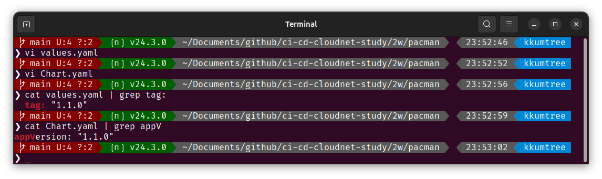
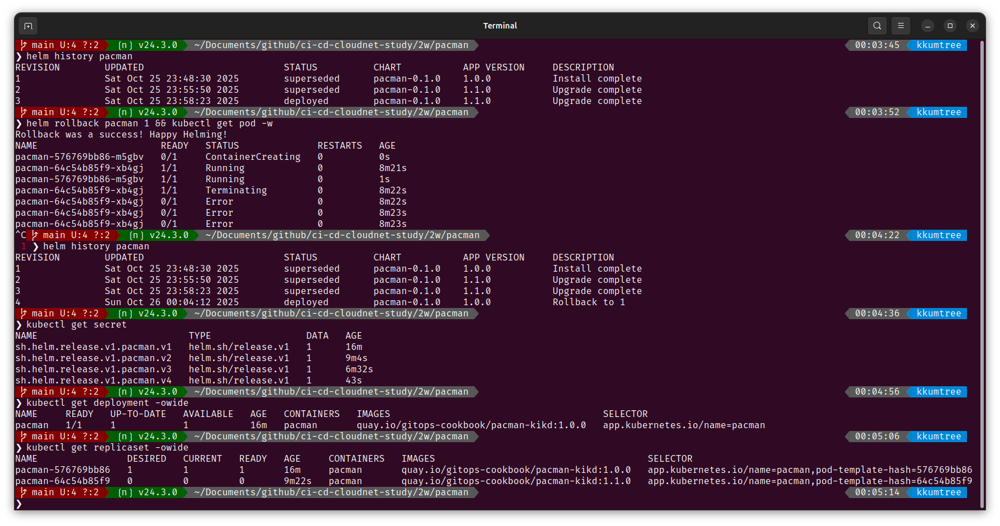
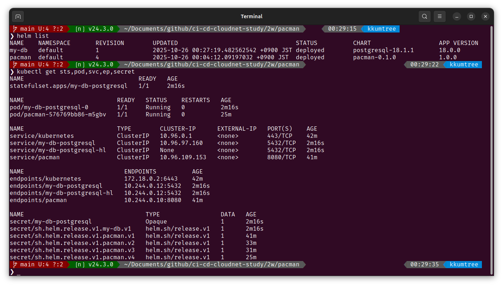
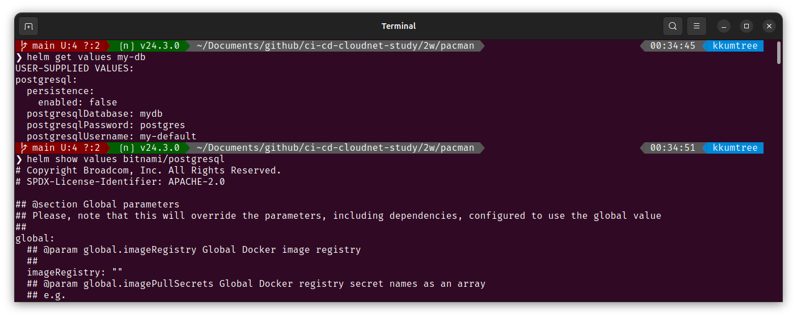
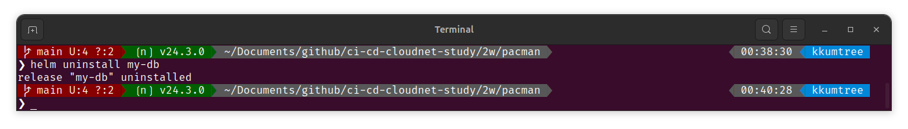
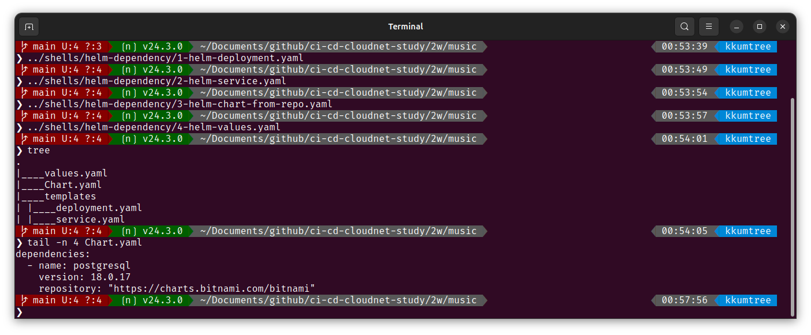
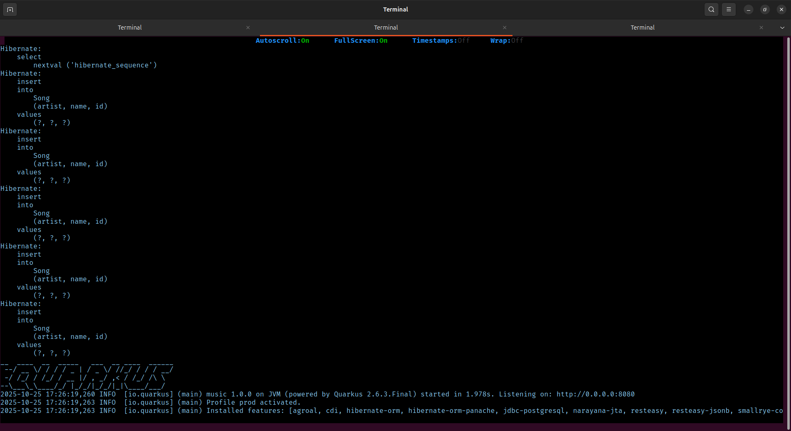
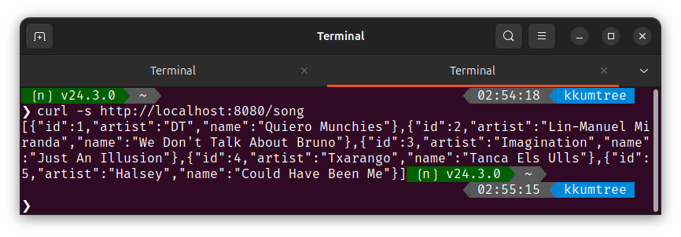

이번에는 재사용성을 위해서 _helpers.tpl 파일을 활용해보겠습니다.
기존의 Helm 101 - CI/CD 스터디 2주차에서 이어집니다.
1. _helpers.tpl을 통한 공통 변수 재사용
(1) 공통사항 숙지
이전에 생성한 deployment.yaml과 service.yaml의 selector 부분에 공통점이 있습니다.
# `{{ .Values.replicaCount }}
## deployment.yaml
spec.selector.matchLabels
spec.template.metadata.labels
## service.yaml
spec.selector
(2) 템플릿 생성
해당 label을 추가/삭제하려면, 여러 필드를 업데이트를 하여야합니다.
대신 _helpers.tpl파일을 생성하여 구성읋 합니다.
_helpers.tpl뿐만 아니라, 맨 앞에_로 시작하기만 하면 되며,
이 파일은 k8s manifest 파일로 취급되지 않습니다.
# 2w/sh## 2w/shells/helm-template/2-mv-and-create-new-tpl-dir.sh ells/helm-template/1-create-helm-helpers.sh
cat << EOF > templates/_helpers.tpl
{{- define "pacman.selectorLabels" -}}
app.kubernetes.io/name: {{ .Chart.Name}}
{{- end }}
EOF
- 위와 같이 함수를 정의하는 형태를 가집니다.

(3) 기존 템플릿 변수 변경
기존의 파일들을 변경합니다.
## 2w/shells/helm-template/2-helm-deployment.yaml
## 2w/shells/helm-template/3-helm-service.yaml
# deployment.yaml 수정
(...)
spec:
replicas: {{ .Values.replicaCount }}
selector:
matchLabels:
{{- include "pacman.selectorLabels" . | nindent 6 }}
template:
metadata:
labels:
{{- include "pacman.selectorLabels" . | nindent 8 }}
# service.yaml 수정
selector:
{{- include "pacman.selectorLabels" . | nindent 6 }}
(...)
이후 _helpers.tpl에 정의한 공통 변수가 정상적으로 들어갔는지 확인합니다.
helm template .

2. 컨테이너 image 파일 업데이트
배포 파일에서 컨테이너 이미지를 갱신하고, 실핼 중인 인스턴스를 업그레이드 해보겠습니다.
(1) 배포
우선 다시 배포해봅니다.
helm install pacman .
helm history pacman
kubectl get deploy -owide

(2) image 태그 갱신
values.yaml 및 Chart.yaml에서 image 태그를 갱신해봅니다.

(3) helm upgrade로 배포
아래와 같이 upgrade 명령어로 배포 합니다.
helm upgrade pacman .
# Release "pacman" has been upgraded. Happy Helming!
# NAME: pacman
# LAST DEPLOYED: Sat Oct 25 23:58:23 2025
# NAMESPACE: default
# STATUS: deployed
# REVISION: 3 ## 리비전 번호가 하나 올라갑니다.
# TEST SUITE: None
helm history pacman
kubectl get secret
kubectl get deploy.replicaset -owide

tag및appVersion으로 필드가 나뉘어 있으나, 배포 상황에 맞게 취사선택하여 전략을 취할 수 있습니다.appVersion과version은 서로 관계가 없음!appVersion: 애플리케이션을 변경할 때마다 업데이트 해야 함.version: 차트 버전이르모, 차트의 구조 등 정의가 변경되면 갱신함.
(3) rollback
이전 버전으로 롤백합니다.
image 태그가 1.0.0으로 지정된 리비전이 1이었으므로 1로 롤백해보겠습니다.
helm history pacman
helm rollback pacman 1 && kubectl get pod -w
helm history pacman
kubectl get secret
kubectl get deployment -owide
kubectl get replicaset -owide
롤백을 하였어도, 기존 버전들은 남아있음을 알 수 있습니다.

3. chart 패키징 해보기
헬름 차트를 배포하기 위해, 패키징을 해봅니다.
helm package .
tree
helm repo index .
cat index.yaml

해당 차트를 차트 저장소(repository)에 게시하여 공유를 할 수 있는데,
차트 저장소는 HTTP 서버이며,
(1) 차트 및 (2).tgz 파일,
(3) 차트에 대한 메타데이터 정보를 담은, index.html 파일이 있어야한다고 합니다.
차트를 저장소에 게시하려면 index.html 파일에 새 메타데이터 정보로 업데이트하고
해당 아티팩트를 업로드해야 한다고 합니다.
4. 리포지토리의 chart 배포
리포지토리에서 helm chart를 가져와 배포해보겠습니다.
(1) chart 가져오기
bitnami의 리포지토리를 등록하고, postgresql 차트를 확인합니다.
helm repo add bitnami https://charts.bitnami.com/bitnami
helm repo list
helm search repo postgresql
helm search repo postgresql -o json | jq

(2) 배포해보기
앞서 확인한 bitnami/postgresql 차트를 배포해봅니다.
helm install my-db \
--set postgresql.postgresqlUsername=my-default,postgresql.postgresqlPassword=postgres,postgresql.postgresqlDatabase=mydb,postgresql.persistence.enabled=false \
bitnami/postgresql
해당 리포지토리의 지원 관련 경고와 함께 배포되었음을 확인할 수 있습니다.

배포 현황을 확인해봅니다.
helm list
kubectl get sts,pod,svc,ep,secret

(4) values 확인 및 실습 정리
기본값(default values)는 helm show를 통해 확인 가능합니다.
# helm get values my-db ## 기본값 확인 불가능
helm show values bitnami/postgresql

아래 방법으로 조금 더 간소하게 확인할 수 있습니다.
helm show values bitnami/postgresql | grep -v '#'

리소스를 정리합니다.
helm uninstall my-db

5. chart간 의존성 설정하기
이제는 직전에 배포해봤던 bitnami/postgresql 차트와
java 애플리케이션 차트 간의 의존성을 설정하여 배포해보겠습니다.
(1) 배포 파일 구성
해당 구성들은 아래 GitHub에 탑재되어 있습니다.
https://github.com/kkumtree/ci-cd-cloudnet-study
Helm의 구성파일들은2w/music폴더에 있습니다.
아래와 같이 차트를 구성했습니다.
## 2w/shells/helm-dependency 폴더의 쉘 파일을 활용
# ❯ tree
# .
# |____values.yaml
# |____Chart.yaml
# |____templates
# | |____deployment.yaml
# | |____service.yaml
다른 점은 Chart.yaml에 dependencies 설정이 있다는 점입니다.
tail -n 4 Chart.yaml
# dependencies:
# - name: postgresql
# version: 18.0.17
# repository: "https://charts.bitnami.com/bitnami"

(2) 의존성 차트 다운로드
차트를 다운로드 하면, .tgz 압축파일을 확인할 수 있습니다.
helm dependency update && tree
# |____values.yaml
# |____Chart.yaml
# |____charts
# | |____postgresql-18.0.17.tgz
# |____Chart.lock
# |____templates
# | |____deployment.yaml
# | |____service.yaml
더불어, Chart.lock 파일도 생성되었음을 확인할 수 있습니다.

(3) 배포 및 확인
배포를 합니다.
helm install music-db .
아래와 같이 PostgreSQL Pod 내에서, values.yaml에 지정한
- username,
my-default를 생성 - database,
mydb를 생성 후,my-default에 접근권한을 생성
하는 로그를 확인할 수 있습니다.

Java 애플리케이션에서도, DB에 접근이 가능해지자 SQL문을 통해 테이블을 생성하고 레코드를 삽입하는 것을 볼 수 있었습니다.

(4) 정상 작동 확인
해당 service에 port-forward 설정 후, 새로운 탭에서 호출하여 응답을 확인합니다.
# 탭 1
kubectl port-forward service/music 8080:8080
# 탭 2
curl -s http://localhost:8080/song


(참고) values.yaml 변수 설정
해당 image의 버전이 10.y.z 에서 18.y.z로 오면서,
chart 변수 지정 방법이 바뀌었습니다.
# values.yaml
postgresql:
# postgresqlUsername: my-default
# postgresqlPassword: postgres
# postgresqlDatabase: mydb
secretName: music-db-postgresql
secretKey: postgres-password
auth:
username: my-default
password: password
database: mydb
auth.username: 사용자 정의 유저를 생성auth.password: 해당secret(이 경우, music-db-postgresql)의 key 값 지정auth.database: 사용자 정의 유저가 접근할 database명
참고로 Database 이미지이므로, helm uninstall 로 차트를 제거했을지라도
PVC/PV는 남아있으니, 이후에 확인 후 제거하면 됩니다.
helm uninstall music-db
kubectl get pvc
kubectl get pv
kubectl delete pvc data-music-db-postgresql-0
kubeclt get pvc,pv

Reference

kkumtree
Source code on GitHub
© 2025 kkumtree and contributors All rights reserved.
Licensed under
CC BY-NC-ND 4.0